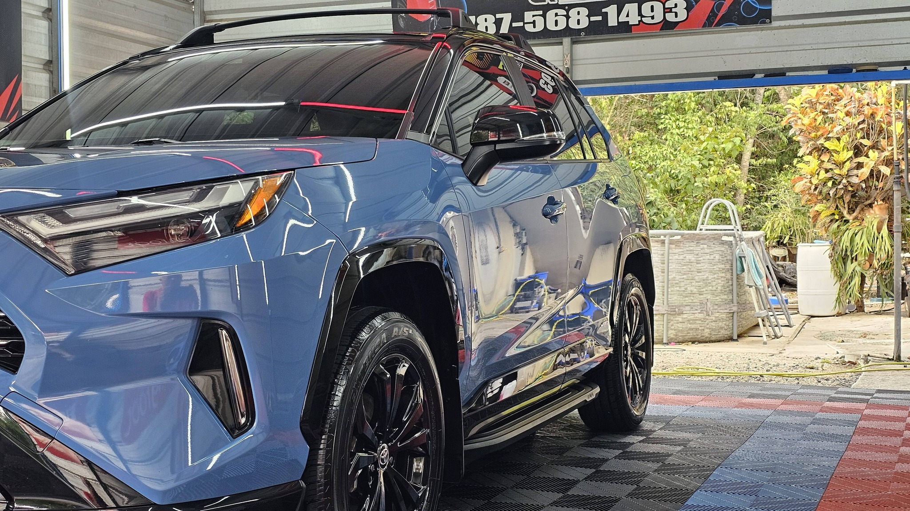
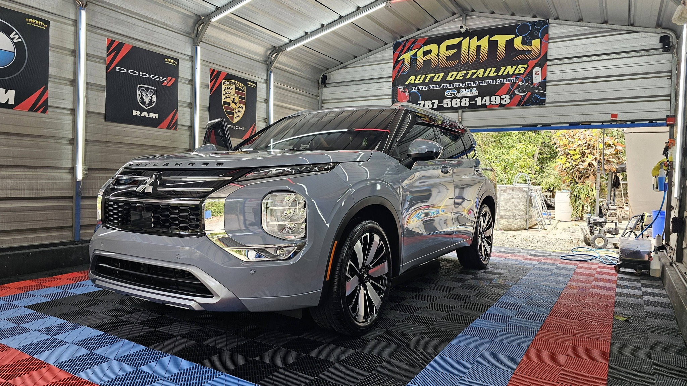

Boquerón, Cabo Rojo · Detailing profesional autorizado
Detailing profesional en nuestro taller interior en Boquerón, Cabo Rojo. Lavado detallado, pulido, interiores profundos y detalles que dejan tu carro como nuevo, por dentro y por fuera.
Resultados reales
Cada foto es un trabajo real del taller. Toca las flechas o desliza para ver más.
En el taller

Lavado completo con atención a cada panel, cristal y detalle, para que tu carro salga limpio de verdad, no solo por encima.
Pulido que revive el brillo de la pintura y deja ese acabado parejo que se nota desde la calle y en el reflejo.
Limpieza profunda de asientos, alfombras, consola y detalles interiores. Tu carro se siente nuevo por dentro también.
Aros limpios, gomas con brillo y los toques finales que completan el trabajo. El detalle está en los detalles.

Quiénes somos
Somos detailers profesionales autorizados y trabajamos cada vehículo dentro de nuestro taller en Boquerón, Cabo Rojo. Con 5.0 estrellas y 25 reseñas en Facebook, nuestro estándar es simple: cada carro sale brillando, por dentro y por fuera, con el cuidado que merece.
Preguntas frecuentes
Estamos en la 99 Calle Boquerón, Cabo Rojo, Puerto Rico, en nuestro taller interior propio.
De martes a viernes de 9:00 AM a 6:00 PM y los sábados de 9:00 AM a 5:00 PM.
Sí, todos los trabajos se coordinan por cita. Escríbenos por WhatsApp al 787-568-1493 y separamos tu espacio.
Lavado detallado, pulido y brillo, limpieza profunda de interiores, aros, gomas y detalles finales. Todo el trabajo se hace dentro de nuestro taller en Boquerón.
Trabajamos autos, SUVs y jeeps, como los que ves en las fotos de esta página.
Escríbenos por WhatsApp al 787-568-1493 con tu vehículo y lo que necesita. Preguntar no tiene costo.
Con 5.0 estrellas y 25 reseñas en Facebook. Síguenos en Treinty Auto Detailing y mira cada trabajo.
Agenda tu cita
Teléfono / WhatsApp
787-568-1493Ubicación
99 Calle Boquerón, Cabo Rojo, PR
Horario
Mar a vie 9 AM - 6 PM · Sáb 9 AM - 5 PM
Llena esto y te abrimos WhatsApp con tu mensaje listo.
Esta página la creó ManuPro. Escríbenos hoy mismo y cotiza la website profesional de tu negocio.
Cotizar por WhatsApp